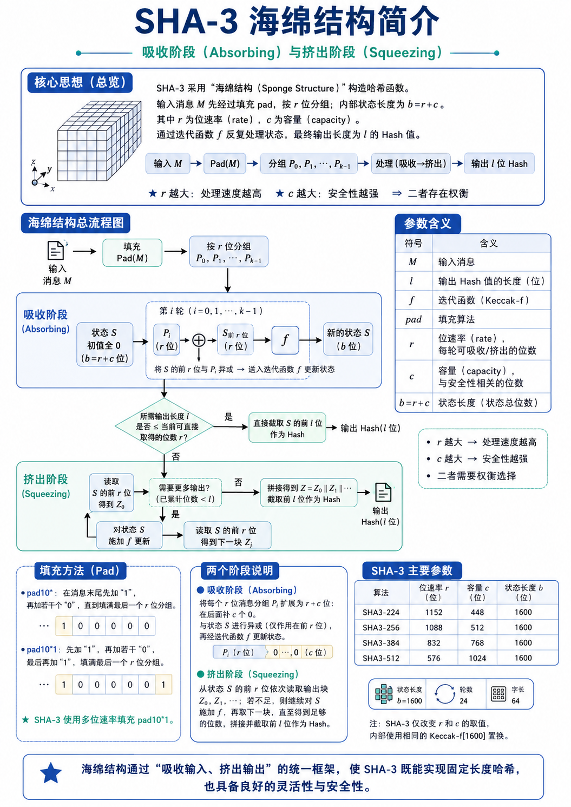
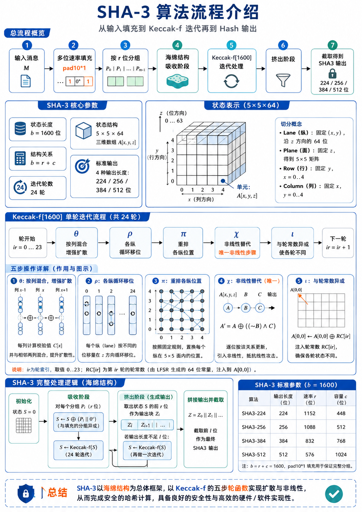
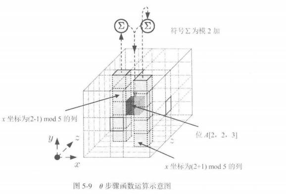
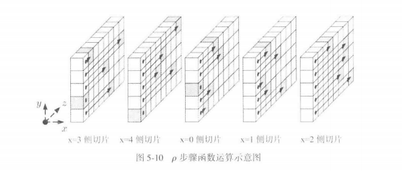
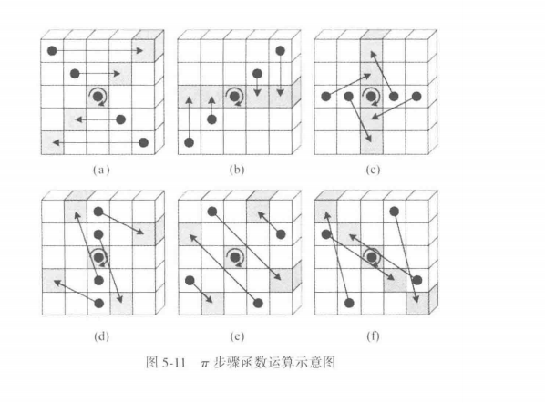
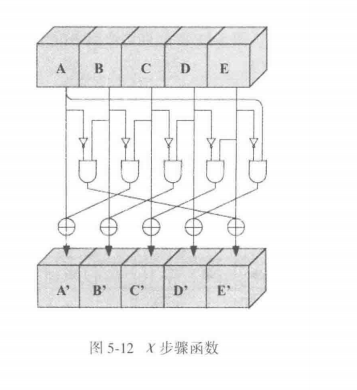

算法介绍-SHA3
海绵结构介绍

海绵结构处理的是一串比特。输入消息记为 \(M\)，消息长度记为 \(n=|M|\)，目标输出长度记为 \(l\)。整个结构内部维护一个 状态变量 \(S\)，状态长度 为 \(b\) 位。
Note
SHA-3 标准哈希使用 Keccak-f[1600]，所以状态长度固定为
这个 \(b\) 位状态被分成前后两段：
其中，
- 前 \(r\) 位叫位速率，负责每一轮和外部数据发生交互；
- 后 \(c\) 位叫容量，主要提供安全余量。
我们可以把状态变量写成
其中，
- \(S_{0:r}\) 是前 \(r\) 位，
- \(S_{r:b}\) 是后 \(c\) 位。
海绵结构的全部流程都围绕这个状态展开：先把消息分组写入状态，再从状态前部读出结果。
Pad(M)：把任意长度消息整理成 r 位分组
吸收阶段每次处理 \(r\) 位消息块。原始消息 \(M\) 的长度 \(n\) 通常难以刚好被 \(r\) 整除，因此需要在消息末尾追加填充串。图中使用的多重位速率填充写作
这个符号按顺序表示三部分：先追加一个 1，中间追加若干个 0，最后追加一个 1。
于是填充后的消息可以写成
这里 \(j\) 是中间 0 的个数。
这里 \(j\) 的值由一个条件决定：填充后的总长度要成为 \(r\) 的整数倍。因此需要
其中的 \(2\) 来自首尾两个 1。
把这个条件整理成可直接计算的形式，就是
算出 \(j\) 后，Pad(M) 就已经确定。教材图里的 \(Pad(M)\) 指的就是追加
这一串填充比特。实际 SHA-3 工程编码还带有用途区分后缀；在海绵结构的学习层面，先按图中的 \(pad10^*1\) 走完整体流程。
Example
举一个小尺寸例子，令 \(r=8\)，原消息为
此时
代入公式：
所以填充串为
填充后的消息为
它刚好形成一个 8 位分组：
再有 \(M=10110010\)，仍取 \(r=8\)。这时 \(n=8\)，计算得到
填充串为
填充后消息为
于是切成两个分组：
这一步说明，Pad(M) 的任务是保证分组边界清楚，同时让每个输入分组长度都等于 \(r\)。
分组：把填充后的 P 切成 P0 到 Pk-1
完成填充后，得到
由于 \(|P|\) 已经是 \(r\) 的整数倍，可以直接切分：
每个分组满足
分组数量为
从这里开始，算法进入吸收阶段。
吸收阶段：每个 Pi 改写一次状态 S
吸收阶段开始时，内部状态初始化为全 0：
每个消息分组 \(P_i\) 长度为 \(r\) 位，状态 \(S\) 长度为 \(b=r+c\) 位。为了把 \(P_i\) 放到和 \(S\) 相同长度的比特串中，需要在 \(P_i\) 后面接 \(c\) 个 0：
这样它就从 \(r\) 位扩展成了 \(b\) 位。第 \(i\) 轮吸收分两步进行。
第一步，把扩展后的分组和当前状态异或：
- 这一步只会让消息块进入状态的前 \(r\) 位；
- 容量部分对应的是 \(0^c\)，它在这一轮异或中作为对齐补位。
第二步，把整个状态送入迭代函数：
在 SHA-3 中，\(f\) 就是 Keccak-f[1600] 置换。它处理完整的 1600 位状态，使刚吸收的消息块经过置换后影响状态各个位置。
因此，一轮吸收可以合并写成：
其中 \(S_{i-1}\) 是上一轮状态，\(S_i\) 是当前分组处理后的状态。所有分组按顺序执行同样的计算：
最后得到的状态 \(S_{k-1}\) 就是整条消息经过吸收后的内部状态。
挤出阶段：从状态 S 读出 Hash
吸收完成后，消息已经全部进入状态。接下来要产生 \(l\) 位输出。海绵结构每次从状态 前 \(r\) 位 读出一个输出块，记为
当已经读出的长度达到目标长度 \(l\) 时，直接截取前 \(l\) 位作为 Hash：
当目标输出长度超过当前已经读出的长度时，需要继续生成下一块输出。做法是如下：
一、先更新状态：
二、再读取新的状态前 \(r\) 位：
如此反复，得到
当 \(|Z|\ge l\) 时，最终返回
教材图中把短输出写成从 \(S\) 前 \(l\) 位截取。海绵函数通用描述常采用每轮从前 \(r\) 位读出。由于 SHA3-224、SHA3-256、SHA3-384、SHA3-512 均满足 \(l\le r\)，这些固定长度算法在流程上都会走到同一个动作：吸收结束后直接截取前 \(l\) 位。
完整算法
按图中的符号，海绵函数可以写成下面的流程。这里把 \(f\) 看作已经给定的置换函数。
Input : M, l, f, pad, r, c
Output: l-bit Hash
b = r + c
# 1. padding
n = |M|
j = (r - ((n + 2) mod r)) mod r
P = M || 1 || 0^j || 1
# 2. split
k = |P| / r
split P into P_0, P_1, ..., P_{k-1}, each with r bits
# 3. absorbing
S = 0^b
for i = 0 to k-1:
X = P_i || 0^c
S = S xor X
S = f(S)
# 4. squeezing
Z = empty bit string
while |Z| < l:
Z = Z || first r bits of S
if |Z| >= l:
break
S = f(S)
return first l bits of Z
这段伪代码对应图中的每个板块：Pad(M) 对应填充框，\(P_0\) 到 \(P_{k-1}\) 对应分组框，for 循环对应吸收阶段，while 循环对应挤出阶段，最后的截取对应输出 Hash。
SHA-3算法介绍

先把图中的对象固定下来。SHA-3 处理的是比特串，输入消息记为 \(M\)，输出长度记为 \(l\)。当选择 SHA3-224、SHA3-256、SHA3-384 或 SHA3-512 中的某一个版本时，三个核心参数随之确定：位速率 \(r\)、容量 \(c\)、状态长度 \(b\)。它们满足
SHA-3 中 \(b=1600\)。所以算法始终维护一个 1600 位状态 \(S\)，其中前 \(r\) 位用于吸收输入和挤出输出，后 \(c\) 位留在状态内部参与 Keccak-f 置换。整条计算链从 \(M\) 出发，经过填充、分组、吸收、Keccak-f 迭代、挤出、截取，最后得到固定长度的 Hash 值。
版本参数
下表为四个标准 SHA-3 哈希版本的参数。
| 算法 | 输出长度 \(l\) | 位速率 \(r\) | 容量 \(c\) | 状态长度 \(b\) |
|---|---|---|---|---|
| SHA3-224 | 224 | 1152 | 448 | 1600 |
| SHA3-256 | 256 | 1088 | 512 | 1600 |
| SHA3-384 | 384 | 832 | 768 | 1600 |
| SHA3-512 | 512 | 576 | 1024 | 1600 |
以 SHA3-256 为例，后续计算使用
这意味着每次吸收 1088 位消息块，每次最多能从状态前部读出 1088 位输出，状态尾部 512 位作为容量参与内部置换。
输入消息先进入 Pad(M)，然后分组
这一部分就不详细说明了，和刚刚介绍的一样
状态 \(S\) 的 1600 位如何组织
把状态画成 \(5\times5\times64\) 的三维结构。令
表示状态中的一个比特，那么总比特数为
- 固定 \((x,y)\) 后，沿 \(z\) 方向的 64 位称为一个 lane。
- 固定 \(z\) 后，得到一个 \(5\times5\) 的 plane（也就是一个平面）。
- 固定 \(y\) 和 \(z\)，令 \(x\) 变化，得到 row。
- 固定 \(x\) 和 \(z\)，令 \(y\) 变化，得到 column。
常见实现会把每个 lane 看成一个 64 位无符号整数。状态共有 25 个 lane：
从比特串映射到三维状态时，可按
理解，即类似于 \(A[1,0,61]=S[64\times(5\times 0+1)+61]=S[125]\)
这个映射说明，\(A[0,0]\) 是最前面的 64 位 lane，接着是 \(A[1,0]\)、\(A[2,0]\)，一直到 \(A[4,4]\)。按字节实现时，每个 64 位 lane 通常按小端序解释。
吸收阶段：消息块进入状态
吸收阶段开始时，状态全置为 0：
第 \(i\) 个输入块 \(P_i\) 长度为 \(r\) 位。状态长度为 \(b=r+c\)。为了把 \(P_i\) 放入状态，需要在 \(P_i\) 后面拼接 \(c\) 个 0：
这样得到一个 1600 位比特串。然后先执行异或：
这一步把 \(P_i\) 混入状态前 \(r\) 位。随后执行 Keccak-f[1600]：
于是第 \(i\) 轮吸收可以写成
从 \(P_0\) 到 \(P_{m-1}\) 都按这个公式处理。每处理一个分组，就完成一次“异或输入块”和一次“24 轮 Keccak-f 置换”。
Keccak-f[1600] 的外层结构
Keccak-f[1600] 是一个 1600 位到 1600 位的置换函数。输入是一个状态 \(A\)，输出仍是一个 1600 位状态。它执行 24 轮，每轮顺序固定：
轮号记为
这五步分别负责列混合、lane 内循环移位、lane 位置重排、逐行非线性替代、轮常数注入。
\(\theta\)：按列求校验并扩散到全列
\(\theta\) 的输入是当前状态 \(A[x,y,z]\)。它先对每个 \(x,z\) 计算一列的异或值：
这里固定了 \(x\) 和 \(z\)，让 \(y\) 从 0 到 4 变化，所以它是同一 column 上 5 个比特的校验值。
接着计算
下标 \(x-1\)、\(x+1\) 按模 5 计算，\(z-1\) 按模 64 计算。用 lane 记法可写作
其中 \(ROT\) 表示 64 位循环左移。
最后更新每个比特：
这一步的作用是让相邻列的校验值影响当前列。一个比特变化会改变所在列的 \(C\)，进而通过 \(D\) 影响邻近列，再进入后续轮传播到更多位置。

\(\rho\)：每个 lane 按固定偏移循环移位
\(\rho\) 处理每个 64 位 lane。对固定的 \((x,y)\)，有一个偏移量 \(r[x,y]\)，然后执行
其中 \(ROT\) 表示 64 位循环左移。偏移量表可以写成如下形式，行表示 \(x\)，列表示 \(y\)：
| \(r[x,y]\) | \(y=0\) | \(y=1\) | \(y=2\) | \(y=3\) | \(y=4\) |
|---|---|---|---|---|---|
| \(x=0\) | 0 | 36 | 3 | 41 | 18 |
| \(x=1\) | 1 | 44 | 10 | 45 | 2 |
| \(x=2\) | 62 | 6 | 43 | 15 | 61 |
| \(x=3\) | 28 | 55 | 25 | 21 | 56 |
| \(x=4\) | 27 | 20 | 39 | 8 | 14 |
\(\rho\) 改变 lane 内部每个比特的 \(z\) 坐标。它本身仍是置换操作，后续配合 \(\pi\) 和 \(\chi\) 后，会让状态中的比特关系更加充分地展开。

\(\pi\)：把 lane 放到新的平面位置
\(\pi\) 负责重排 25 个 lane 的 \((x,y)\) 位置。公式为
这里 \(A[x,y]\) 表示一个 64 位 lane。经过 \(\pi\) 后，lane 内的 64 位作为整体移动到新的平面坐标中。
\(\rho\) 改变 lane 内部的 \(z\) 位置，\(\pi\) 改变 lane 在 \(5\times5\) 平面中的位置。两者连续执行后，信息在 lane 内部和 lane 之间都完成重新排列。

\(\chi\)：逐行非线性替代
\(\chi\) 在每一行上执行。它的公式是
其中 \(x+1\) 和 \(x+2\) 按模 5 计算，\(\sim\) 是按位取反，\(\land\) 是按位与。
这一式子说明，当前位置的新值同时受本位置、右侧第一个位置、右侧第二个位置影响。由于它包含取反和与运算，状态变化从线性异或关系进入非线性关系。图中标注“唯一非线性步骤”，指的就是 \(\chi\)。SHA-3 抗线性分析、差分分析等性质，很大程度依赖这一步和其他扩散步骤的配合。

\(\iota\)：把轮常数注入 \(A[0,0]\)
最后一步 \(\iota\) 将当前轮的轮常数 \(RC[ir]\) 异或到 lane \(A[0,0]\)：
轮常数是 64 位常量。24 轮对应 24 个常量：
\(\iota\) 给每一轮加入轮号相关成分，使每轮置换带有轮次差异。执行完 \(\iota\) 后，当前轮结束，进入下一轮。24 轮结束后，Keccak-f[1600] 输出新的状态 \(S\)。
挤出阶段：从状态读出输出
所有消息块吸收完后，状态 \(S\) 已经由完整输入消息决定。接下来生成输出。先从状态前 \(r\) 位读出第一块：
将其拼到输出串 \(Z\) 中：
当 \(|Z|\) 已经达到输出长度 \(l\)，取前 \(l\) 位作为最终 Hash：
当还要更多输出时，继续执行一次 Keccak-f[1600]：
然后读出下一块：
持续拼接：
直到 \(|Z|\ge l\)，再截取前 \(l\) 位。对于 SHA3-224、SHA3-256、SHA3-384、SHA3-512，输出长度 \(l\) 均小于各自的 \(r\)，所以固定长度 SHA-3 在吸收完后通常读取一次状态前部并截取即可。
伪代码
Input : message M, selected SHA-3 version
Output: hash value H
根据版本确定 l, r, c
b = 1600
S = 0^b
N = M || 01
j = (r - ((|N| + 2) mod r)) mod r
P = N || 1 || 0^j || 1
把 P 按 r 位切分为 P_0, P_1, ..., P_{m-1}
for i = 0 to m-1:
S = S xor (P_i || 0^c)
S = Keccak_f_1600(S)
Z = empty
while |Z| < l:
Z = Z || S[0:r]
if |Z| >= l:
break
S = Keccak_f_1600(S)
H = Z[0:l]
return H
然后Keccak_f_1600内部如下：
Input : 1600-bit state S
Output: 1600-bit state S
把 S 映射为 A[x,y,z]
for ir = 0 to 23:
θ: 计算每列校验 C[x]，生成 D[x]，A[x,y] ^= D[x]
ρ: 每个 lane 按 r[x,y] 循环左移
π: 按 B[y, (2x+3y) mod 5] = A[x,y] 重排 lane
χ: 按 A[x,y] = B[x,y] ^ ((~B[x+1,y]) & B[x+2,y]) 更新每行
ι: A[0,0] ^= RC[ir]
把 A[x,y,z] 重新展开为 1600-bit state
return S
算法实现
from __future__ import annotations
MASK64 = (1 << 64) - 1
# Keccak-f[1600] 的 24 个轮常数 RC[ir]
ROUND_CONSTANTS = [
0x0000000000000001, 0x0000000000008082,
0x800000000000808A, 0x8000000080008000,
0x000000000000808B, 0x0000000080000001,
0x8000000080008081, 0x8000000000008009,
0x000000000000008A, 0x0000000000000088,
0x0000000080008009, 0x000000008000000A,
0x000000008000808B, 0x800000000000008B,
0x8000000000008089, 0x8000000000008003,
0x8000000000008002, 0x8000000000000080,
0x000000000000800A, 0x800000008000000A,
0x8000000080008081, 0x8000000000008080,
0x0000000080000001, 0x8000000080008008,
]
# ρ 步骤使用的循环左移偏移量
ROTATION_OFFSETS = [
1, 3, 6, 10, 15, 21,
28, 36, 45, 55, 2, 14,
27, 41, 56, 8, 25, 43,
62, 18, 39, 61, 20, 44,
]
# ρ + π 合并实现时使用的 lane 访问顺序
PI_LANE = [
10, 7, 11, 17, 18, 3,
5, 16, 8, 21, 24, 4,
15, 23, 19, 13, 12, 2,
20, 14, 22, 9, 6, 1,
]
def rotl64(x: int, n: int) -> int:
"""64 位循环左移。"""
n %= 64
return ((x << n) | (x >> (64 - n))) & MASK64
def keccak_f1600(state: list[int]) -> list[int]:
"""
Keccak-f[1600] 置换函数。
state 有 25 个 64 位 lane：
state[x + 5*y] 对应 A[x, y]
总长度为：
25 * 64 = 1600 bit
"""
st = state[:]
for rc in ROUND_CONSTANTS:
# ------------------------------------------------------------
# 1. θ step：按列混合
# C[x] = A[x,0] ^ A[x,1] ^ A[x,2] ^ A[x,3] ^ A[x,4]
# D[x] = C[x-1] ^ ROT(C[x+1], 1)
# A[x,y] = A[x,y] ^ D[x]
# ------------------------------------------------------------
c = [
st[x] ^ st[x + 5] ^ st[x + 10] ^ st[x + 15] ^ st[x + 20]
for x in range(5)
]
d = [
c[(x - 1) % 5] ^ rotl64(c[(x + 1) % 5], 1)
for x in range(5)
]
for x in range(5):
for y in range(5):
st[x + 5 * y] = (st[x + 5 * y] ^ d[x]) & MASK64
# ------------------------------------------------------------
# 2. ρ step + 3. π step：lane 内循环移位，然后重排 lane 位置
# 这里采用 Keccak 常见的合并写法。
# ------------------------------------------------------------
t = st[1]
for i in range(24):
j = PI_LANE[i]
temp = st[j]
st[j] = rotl64(t, ROTATION_OFFSETS[i])
t = temp
# ------------------------------------------------------------
# 4. χ step：逐行非线性替代
# A[x,y] = A[x,y] ^ ((~A[x+1,y]) & A[x+2,y])
# ------------------------------------------------------------
for y in range(5):
row = [st[x + 5 * y] for x in range(5)]
for x in range(5):
st[x + 5 * y] = (
row[x] ^ ((~row[(x + 1) % 5]) & row[(x + 2) % 5])
) & MASK64
# ------------------------------------------------------------
# 5. ι step：注入轮常数
# A[0,0] = A[0,0] ^ RC[ir]
# ------------------------------------------------------------
st[0] = (st[0] ^ rc) & MASK64
return st
def absorb_block(state: list[int], block: bytes, rate_bytes: int) -> list[int]:
"""
吸收一个 rate 大小的数据块。
block 长度为 rate_bytes。
每 8 个字节按小端序转成一个 64 位 lane，
然后异或进 state 的前 rate_bytes 区域。
"""
st = state[:]
for offset in range(0, rate_bytes, 8):
lane_index = offset // 8
lane_value = int.from_bytes(block[offset:offset + 8], "little")
st[lane_index] = (st[lane_index] ^ lane_value) & MASK64
return keccak_f1600(st)
def sha3(data: bytes, digest_bits: int) -> bytes:
"""
计算 SHA3-224 / SHA3-256 / SHA3-384 / SHA3-512。
参数：
data : 输入消息，字节串形式
digest_bits : 输出长度，可取 224、256、384、512
返回：
Hash 结果，字节串形式
"""
params = {
224: (144, 28), # rate = 1152 bit = 144 byte, output = 28 byte
256: (136, 32), # rate = 1088 bit = 136 byte, output = 32 byte
384: (104, 48), # rate = 832 bit = 104 byte, output = 48 byte
512: (72, 64), # rate = 576 bit = 72 byte, output = 64 byte
}
if digest_bits not in params:
raise ValueError("digest_bits must be one of 224, 256, 384, 512")
rate_bytes, digest_bytes = params[digest_bits]
# 状态长度 b = 1600 bit = 25 个 64 位 lane
state = [0] * 25
# ------------------------------------------------------------
# 一、吸收完整 rate 块
# ------------------------------------------------------------
pos = 0
while pos + rate_bytes <= len(data):
block = data[pos:pos + rate_bytes]
state = absorb_block(state, block, rate_bytes)
pos += rate_bytes
# ------------------------------------------------------------
# 二、处理最后一个块，并完成 SHA-3 填充
#
# SHA-3 固定长度哈希的领域分离后缀为 0x06。
# 最后一个 rate 块末尾异或 0x80，对应 pad10*1 的末尾 1。
# ------------------------------------------------------------
block = bytearray(rate_bytes)
remain = data[pos:]
block[:len(remain)] = remain
# 0x06 = SHA-3 后缀 01 + pad10*1 起始位
block[len(remain)] ^= 0x06
# 0x80 = 当前 rate 块最高位写入 pad10*1 末尾位
block[rate_bytes - 1] ^= 0x80
state = absorb_block(state, bytes(block), rate_bytes)
# ------------------------------------------------------------
# 三、挤出输出
#
# 从 state 前 rate_bytes 个字节读取输出；
# 输出长度达到 digest_bytes 后截取。
# ------------------------------------------------------------
output = bytearray()
while len(output) < digest_bytes:
for offset in range(0, rate_bytes, 8):
lane_index = offset // 8
output.extend(state[lane_index].to_bytes(8, "little"))
if len(output) >= digest_bytes:
break
if len(output) < digest_bytes:
state = keccak_f1600(state)
return bytes(output[:digest_bytes])
def sha3_224(data: bytes) -> bytes:
return sha3(data, 224)
def sha3_256(data: bytes) -> bytes:
return sha3(data, 256)
def sha3_384(data: bytes) -> bytes:
return sha3(data, 384)
def sha3_512(data: bytes) -> bytes:
return sha3(data, 512)
if __name__ == "__main__":
msg = input("请输入消息：").encode("utf-8")
print("SHA3-224:", sha3_224(msg).hex())
print("SHA3-256:", sha3_256(msg).hex())
print("SHA3-384:", sha3_384(msg).hex())
print("SHA3-512:", sha3_512(msg).hex())